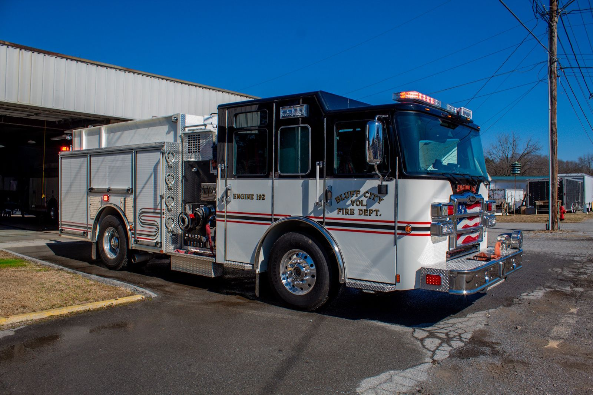
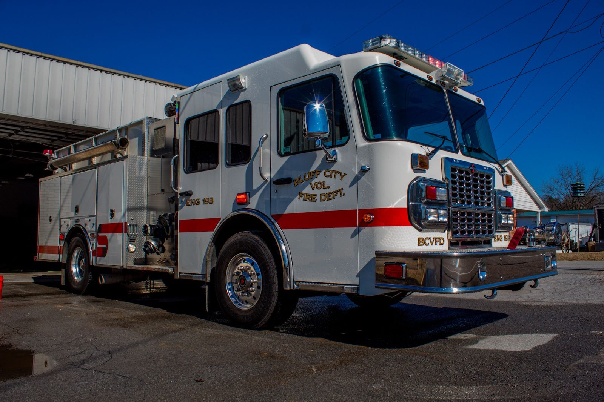
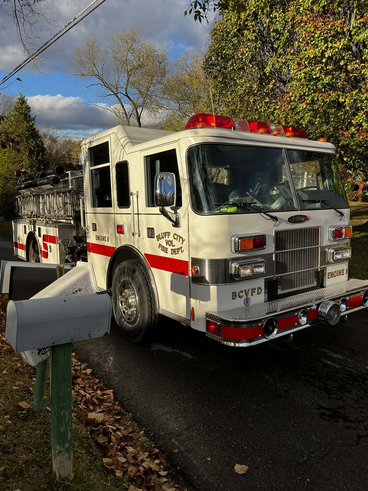
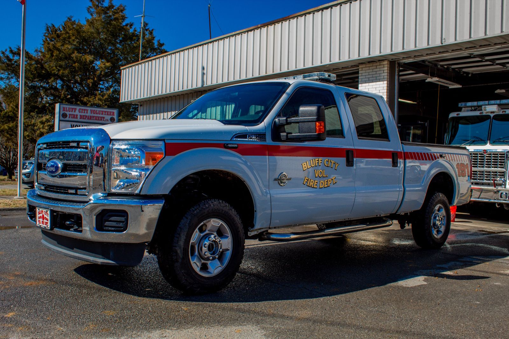

Engine 192
Rescue Pumper
These are the vehicles that respond when you call 911.

Rescue Pumper

Rescue Pumper

Rescue Pumper / Backup Truck
Tanker, 2,500 Gallons
Brush Truck

Utility / Support Vehicle